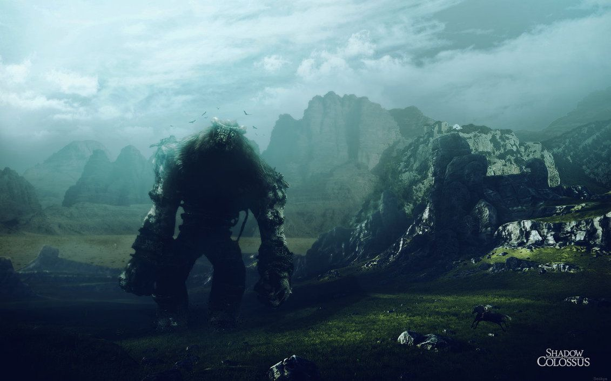
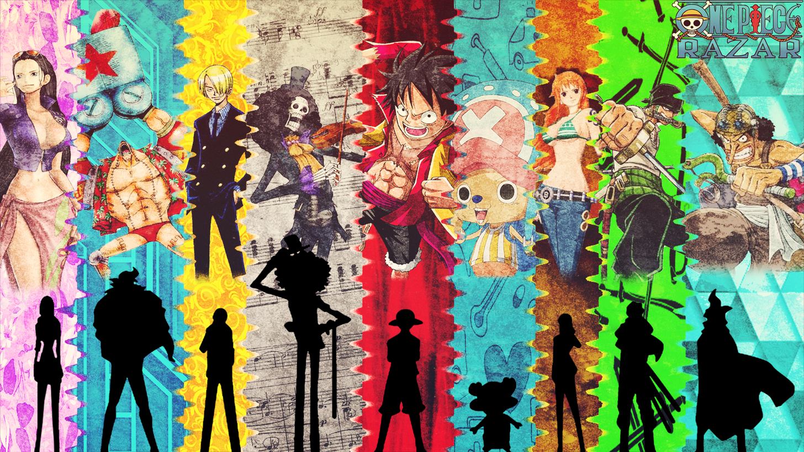
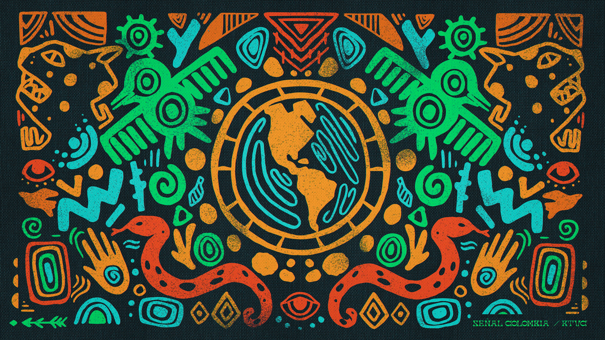

Me llamo Jorge, alias Koke o como creador digital Kokeaft (por que kokes hay muchos en el mundo hahahahh =D ).
Desde mi infancia crecí en un ambiente de videojuegos y tecnologia, amo los videojuegos, amo el cine, amo la animacion y como usuario también me enmaravillo con lo que nos ofrece la digitalizacion de hoy en dia
Como te mencione, llevo mucho tiempo desarrollando habilidades y probando experiencias de interfaces, como tambien consumiendo estos diversos mundos y hoy en día soy mas que un conocedor en estas areas lo cual, este espacio sera para reflejar toda mi experiencia vivida y yo se, que a mas de algun cibernauta le servira.
Como es un sitio personal lo que leeras acá muchas veces estara al día de lo actual o incluso un poco adelantado a lo que ya conoces de la cultura en general, nuestra sociedad hoy en dia esta llena de ilusiones, cosa que tambien en algun momento pretendo hablar en mi propio canal de youtube.
Internet es un sitio basto y emocionante, gracias a el, eh logrado hacer en la vida amigos, amores, conocer gente, ir a eventos, ver series, peliculas , formarme profesionalmente y desde luego ahora es mi turno de dejar algo en el n_n